Workzone & kantieret
Fusha 2.5D, harta, plani dhe ekipi në një vend. Pemët kanë kartën, fotot dhe progresin e tyre.
BaumdienstFlow · Musterfirma
Planifiko ekipin në Workzone, puno në terren dhe mbaj të lidhura pajisjet, riparimet dhe drurin. Një ambient i qartë për çdo rol, në kompjuter dhe telefon.
Në foto: firma shembull Baumdienst Musterstadt GmbH. Të gjithë personat dhe të dhënat janë fiktive.
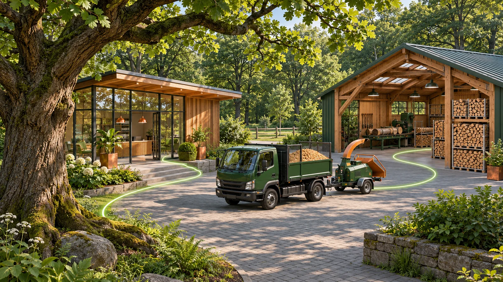
Workzone
Rrjedhat ruajnë të njëjtin identitet të pajisjes, ekipit dhe kantierit. Pamje të thjeshta për punën e përditshme, detaje kur duhen.
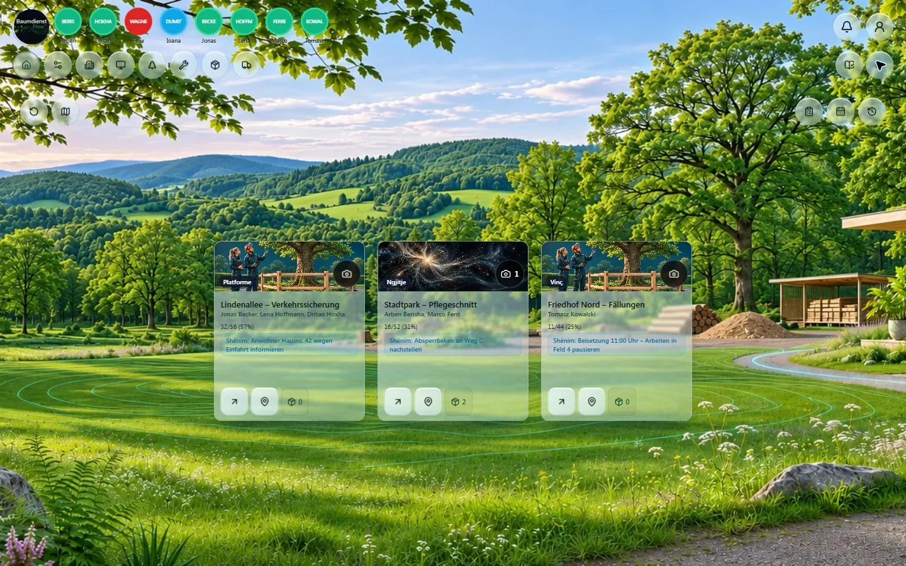
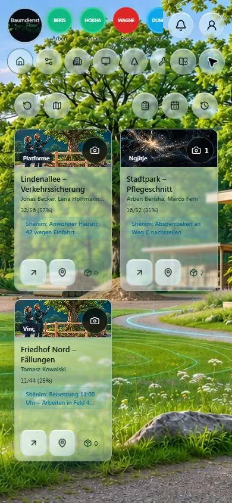
Pamje reale nga demoja Musterfirma · të dhëna fiktive · 13–14.11.2026
Zyrat
Nga recepsioni te zyra personale 2.5D: dokumentet, detyrat dhe asistenti gjenden aty ku duhen. Ambienti përshtatet për telefon dhe për dritën e ditës apo mbrëmjes.
Asistenti i zyrës është aktiv në Musterfirma me të dhëna fiktive dhe kufij ditorë. Lidhja me emailin e punës është në planifikim.
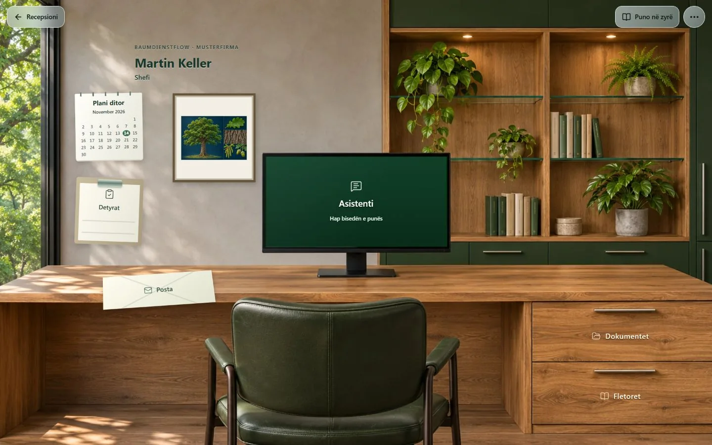
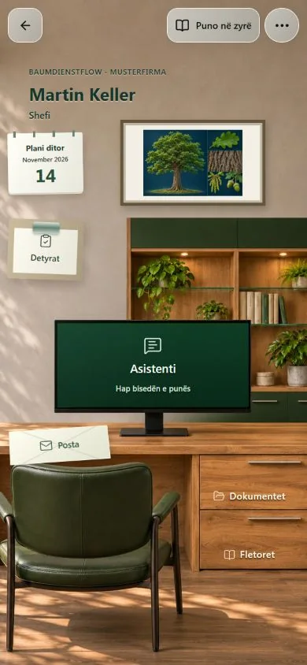
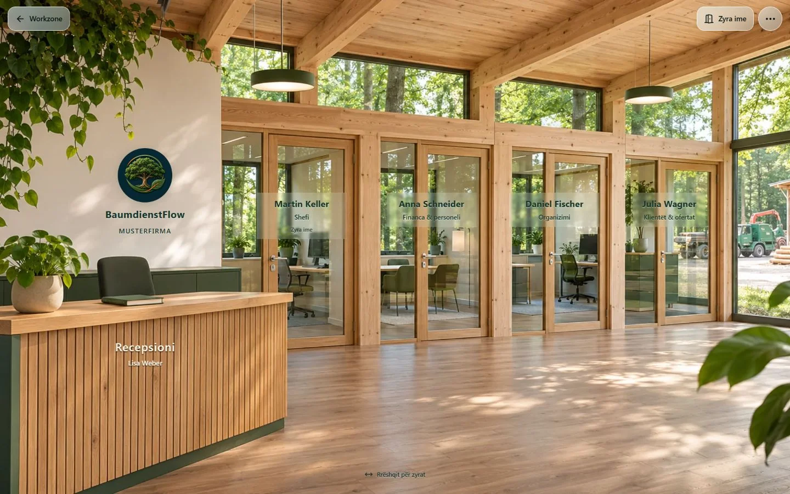
Proceset
Rrjedhat ruajnë të njëjtin identitet të pajisjes, ekipit dhe kantierit. Pamje të thjeshta për punën e përditshme, detaje kur duhen.
Fusha 2.5D, harta, plani dhe ekipi në një vend. Pemët kanë kartën, fotot dhe progresin e tyre.
Forma, gjethja, lëvorja dhe lulet ndihmojnë orientimin. Ilustrime për mësim, jo identifikim automatik i pemës reale.
Barkod ose NFC për pajisjet, dorëzime me konfirmim dhe histori të përbashkët. Fotot e ngarkuara kanë përparësi ndaj ilustrimeve AI.
Pranuar → në riparim → riparuar → liruar. Pjesët, dokumentet dhe historiku qëndrojnë pranë pajisjes.
Identitet me targë, barkod shtesë sipas nevojës. Gjendja dhe HU/SP/UVV duken qartë në karta kompakte.
Druri vjen nga kantieri, kalon fazat e editueshme dhe del i paketuar në stok ose shitje. Riparimet mbeten proces më vete.
Musterfirma
Pamjet e mëposhtme janë kapje të aplikacionit, jo ndërfaqe të gjeneruara. Firma, emrat dhe regjistrimet janë shembuj fiktivë.
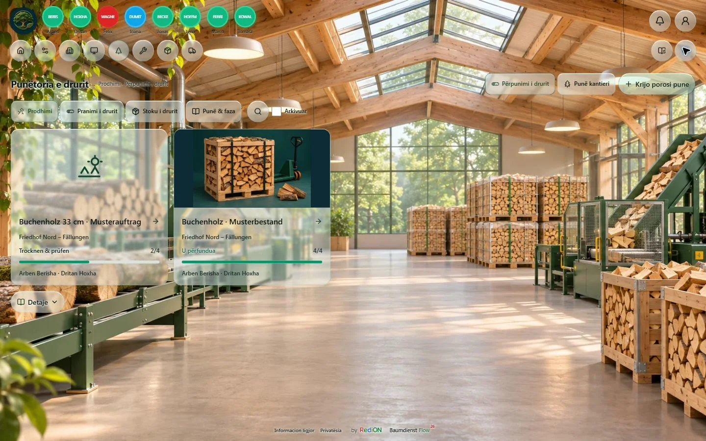
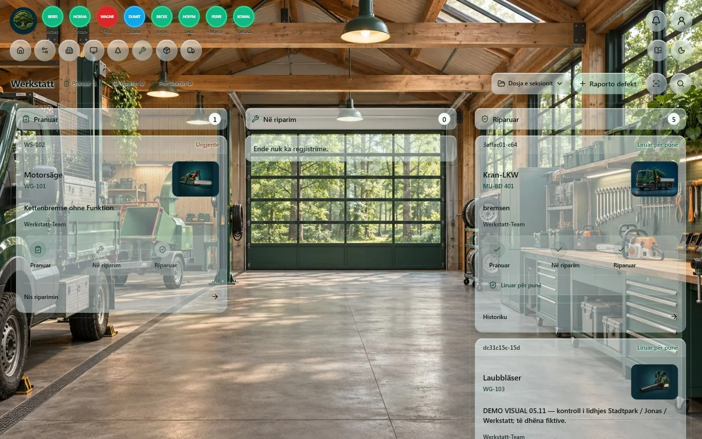
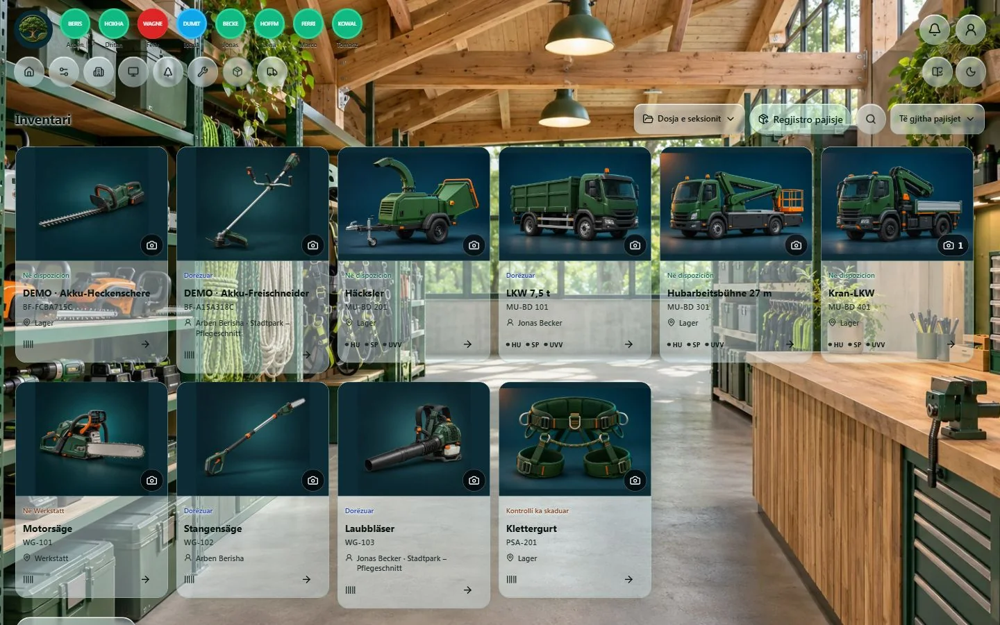
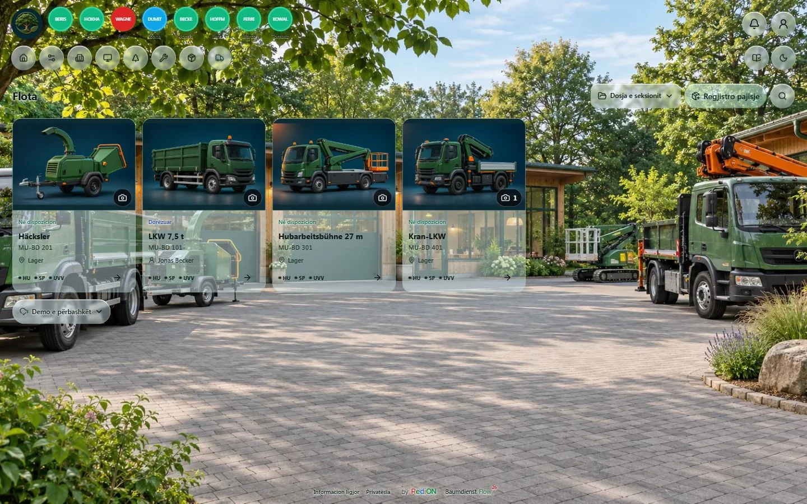
Pamje reale nga demoja Musterfirma · të dhëna fiktive · 13–14.11.2026
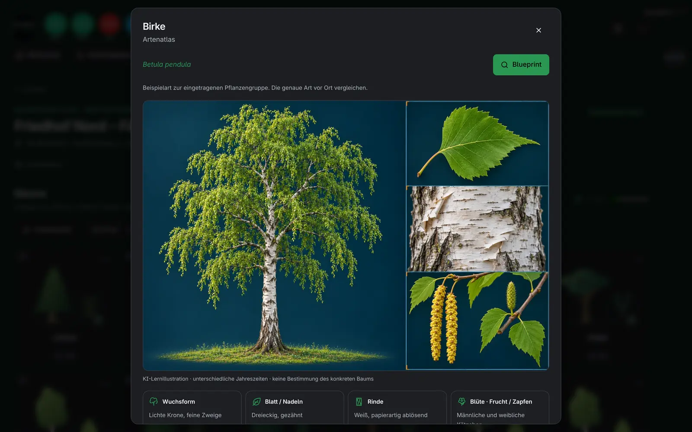
Forma, gjethja, lëvorja dhe lulet ndihmojnë orientimin. Ilustrime për mësim, jo identifikim automatik i pemës reale.
NFC-ja fizike, printimi dhe kamera kërkojnë provë në pajisjen përkatëse. AI dhe shërbimet e lidhura varen nga konfigurimi dhe miratimi i firmës.
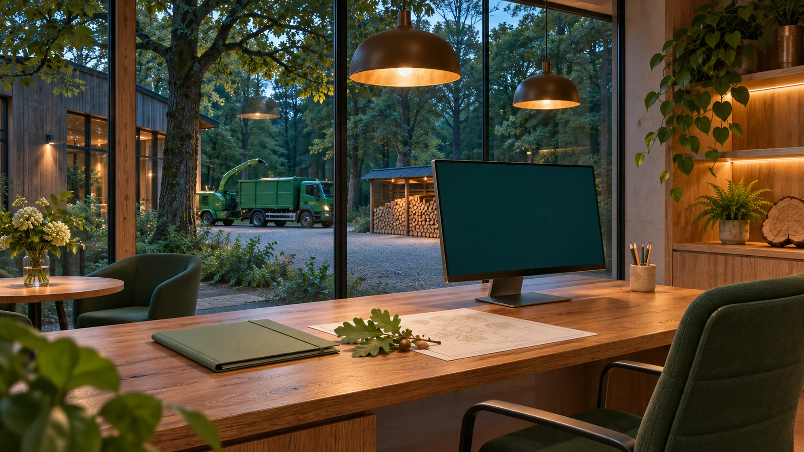
Day / Night
Recepsioni, drejtimi, financa, organizimi dhe klientët kanë mjete sipas rolit. Punonjësit vazhdojnë me hyrjen e tyre personale.
Dashboard view
Dashboard view tregon ditën dhe muajin në grafika: kush punon, sa orë, sa ka përparuar çdo kantier. Mund të hapet edhe si ekran i madh në zyrë.
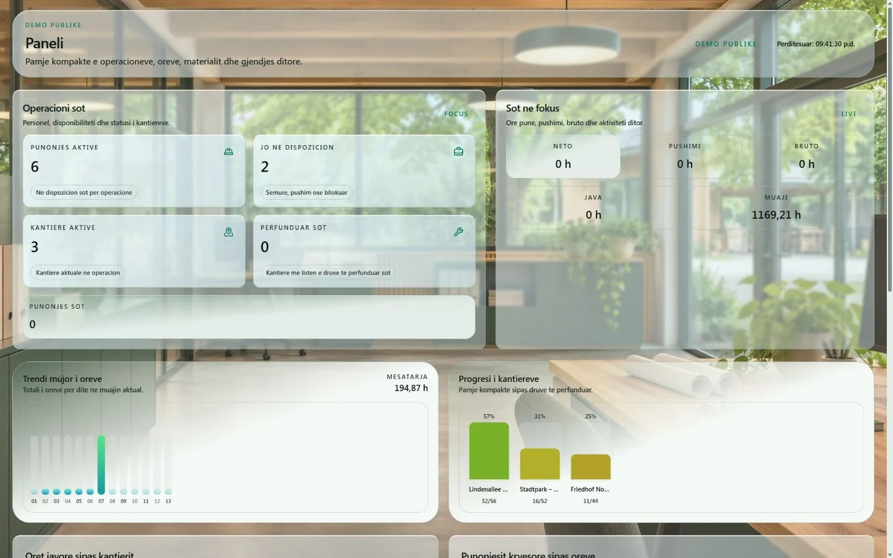
Pamje reale nga demoja Musterfirma · të dhëna fiktive · 13–14.11.2026
Si fillohet
Njihu me proceset në firmën shembull fiktive. Demoja nuk hap firmën tënde.
Para nisjes, qartëso çmimin, shërbimet e përfshira, marrjen e të dhënave dhe afatin e konfigurimit.
Pas konfigurimit të veçantë dhe konfirmimit të kushteve, zyra përdor hyrjen e firmës dhe ekipi PIN-et personale.
Para nisjes
Nuk publikojmë çmime fikse në këtë faqe. Kërko ofertë për përdorimin e BaumdienstFlow dhe konfigurimin e firmës; çmimi dhe shërbimet duhen konfirmuar para nisjes.
Kërko të ndahen konfigurimi fillestar dhe përdorimi i mëtejshëm: çmimi, periudha e faturimit, modulet e përfshira, marrja e listave ekzistuese dhe mbështetja. Ky website nuk përcakton tarifë ose paketë të detyrueshme.
Përshkruaj firmën, vendin, madhësinë e ekipit, mjetet dhe kantieret, gjuhët dhe proceset që dëshiron të organizosh. Fillimisht mjaftojnë numrat e përgjithshëm; mënyra dhe përmbajtja e marrjes së listave të firmës qartësohen veçmas. Afati i konfigurimit përcaktohet sipas kërkesës.
Jo. Demoja publike paraqet një firmë shembull me të dhëna fiktive. Hapja e saj ose dërgimi i një kërkese nuk krijon llogari produktive, nuk importon të dhënat e firmës dhe nuk aktivizon shërbim. Hyrja reale dhe konfigurimi qartësohen veçmas; demoja nuk është pranimi operacional i firmës tënde.
Hyrja
Zyra hyn me llogarinë e firmës. Punëtorët hyjnë me PIN-in e tyre personal në telefon.
NFC-ja fizike, printimi dhe kamera kërkojnë provë në pajisjen përkatëse. AI dhe shërbimet e lidhura varen nga konfigurimi dhe miratimi i firmës.
Mjete falas
Falas · live
Biblioteka e dijes për punën në terren: libra të ilustruar, kurse bazë dhe teste për kujdesin e pemëve, ndërtimin dhe sigurinë. Përkthim me AI në gjuhën e punëtorit dhe një asistent që përgjigjet nga rregullat e firmës.
Hap bibliotekënNë zhvillim · beta lokale
Binjaku dixhital i pemës. Nga foto te dokumentimi: AI ndihmon me matjet, specialisti i rishikon, të dhënat e erës vijnë nga DWD dhe raporti del si PDF. Hapet nga karta e pemës në BaumdienstFlow dhe si mjet në KiDraht.
Mjet ndihmës për dokumentim. Nuk zëvendëson kontrollin e sigurisë nga specialisti.